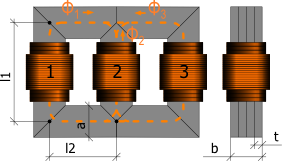

Standard package icon.
Extends from Modelica.Icons.Package (Icon for standard packages).
| Name | Description |
|---|---|
Transformer1PhaseWithHysteresis | Single Phase transformer with ferromagnetic core and hysteresis |
Transformer3PhaseYyWithHysteresis | Three phase transformer in Yy configuration |
Simple model of a single phase transformer with a primary and a secondary winding and a magnetic core. The core is modeled with GenericHystTellinenEverett flux tube elements. Thus, this element considers static and dynamic hysteresis.
|
|
Extends from Modelica.Magnetic.FluxTubes.Interfaces.ConditionalHeatPort (Partial model to include a conditional HeatPort in order to describe the power loss via a thermal network).
| Type | Name | Default | Description |
|---|---|---|---|
Integer | N1 | 10 | Primary turns |
Length | L1 | 2.4 * (a + b) | Mean primary turn length |
Length | d1 | 5e-4 | Wire diameter of primary turns |
Resistivity | rho1 | 1.678e-8 | Resistivity of primary winding (at 20degC) |
LinearTemperatureCoefficient | alpha1 | 0 | Temperature coefficient of primary turns |
Integer | N2 | 10 | Secondary turns |
Length | L2 | L1 | Mean secondary turn length |
Length | d2 | d1 | Wire diameter of secondary turns |
Resistivity | rho2 | rho1 | Resistivity of secondary winding (at 20degC) |
LinearTemperatureCoefficient | alpha2 | alpha1 | Temperature coefficient of secondary turns |
Length | l1 | 0.04 | Mean Length l1 of core |
Length | l2 | 0.06 | Mean Length l2 of core |
Length | a | 0.015 | Height of core |
Length | b | 0.01 | Width of core |
BaseData | mat | FluxTubes.Material.HysteresisEverettParameter.BaseData() | Parameter set of ferromagnetic Hysteresis |
Real | MagRelStart | 0 | Initial magnetization of Core (-1..1) |
Boolean | MagRelFixed | false | Fixed |
MagneticFieldStrength | HStart | 0 | Initial magnetic field strength of Core |
Boolean | HFixed | false | Fixed |
ElectricCurrent | I1Start | 0 | Initial primary current through winding |
Boolean | I1Fixed | false | Fixed |
Boolean | useHeatPort | false | =true, if HeatPort is enabled |
Temperature | T | 293.15 | Fixed device temperature if useHeatPort = false |
Boolean | EddyCurrents | false | Enable eddy currents |
Conductivity | sigma | mat.sigma | Conductivity of core material |
Length | t | 5e-4 | Thickness of lamination |
Length | L_l1 | 0.01 | Length of leakage of primary Winding |
Area | A_l1 | 1e-5 | Cross section of leakage of primary Winding |
Real | mu_rel1 | 1 | Constant relative permeability of primary leakage (>0 required) |
Length | L_l2 | 0.01 | Length of leakage of secondary Winding |
Area | A_l2 | 1e-5 | Cross section of leakage of secondary Winding |
Real | mu_rel2 | 1 | Constant relative permeability of secondary leakage (>0 required) |
| Type | Name | Description |
|---|---|---|
NegativePin | n1 | Negative pin of primary winding |
PositivePin | p1 | Positive pin of primary winding |
NegativePin | n2 | Negative pin of secondary winding |
PositivePin | p2 | Positive pin of secondary winding |
HeatPort_a | heatPort |
Simple model of a three phase transformer with primary and a secondary windings and a magnetic E-I shaped core. The core is modeled with GenericHystTellinenEverett flux tube elements. Thus, this model considers static and dynamic hysteresis as well as initial flux.
|  |
Extends from Modelica.Magnetic.FluxTubes.Interfaces.ConditionalHeatPort (Partial model to include a conditional HeatPort in order to describe the power loss via a thermal network).
| Type | Name | Default | Description |
|---|---|---|---|
Integer | N1 | 10 | Primary turns |
Length | L1 | 2.4 * (a + b) | Mean primary turn length |
Length | d1 | 5e-4 | Wire diameter of primary turns |
Resistivity | rho1 | 1.678e-8 | Resistivity of primary winding (at 20degC) |
LinearTemperatureCoefficient | alpha1 | 0 | Temperature coefficient of primary turns |
Integer | N2 | 10 | Secondary turns |
Length | L2 | L1 | Mean secondary turn length |
Length | d2 | d1 | Wire diameter of secondary turns |
Resistivity | rho2 | rho1 | Resistivity of secondary winding (at 20degC) |
LinearTemperatureCoefficient | alpha2 | alpha1 | Temperature coefficient of secondary turns |
Length | l1 | 0.04 | Mean length l1 of core |
Length | l2 | 0.06 | Mean length l2 of core |
Length | a | 0.015 | Height of core |
Length | b | 0.01 | Width of core |
BaseData | mat | FluxTubes.Material.HysteresisEverettParameter.BaseData() | Core Material |
Real | MagRelStart[3] | {0, 0, 0} | Initial magnetization of Core (-1..1) |
Boolean | MagRelFixed[3] | {false, false, false} | Fixed |
MagneticFieldStrength | HStart[3] | {0, 0, 0} | Initial magnetic field strength of Core |
Boolean | HFixed[3] | {false, false, false} | Fixed |
ElectricCurrent | I1Start[3] | {0, 0, 0} | Initial current of primary Windings |
Boolean | I1Fixed[3] | {false, false, false} | Fixed |
ElectricCurrent | I2Start[3] | {0, 0, 0} | Initial current of secondary Windings |
Boolean | I2Fixed[3] | {false, false, false} | Fixed |
Boolean | useHeatPort | false | =true, if HeatPort is enabled |
Temperature | T | 293.15 | Fixed device temperature if useHeatPort = false |
Boolean | EddyCurrents | false | Enable eddy currents |
Conductivity | sigma | mat.sigma | Conductivity of core material |
Length | t | 5e-4 | Thickness of lamination |
Length | L_l1 | 0.01 | Length of leakage of primary Winding |
Area | A_l1 | 1e-5 | Cross section of leakage of primary Winding |
Real | mu_rel1 | 1 | Constant relative permeability of primary leakage (>0 required) |
Length | L_l2 | 0.01 | Cross section of leakage of secondary Winding |
Area | A_l2 | 1e-5 | Length of leakage of secondary Winding |
Real | mu_rel2 | 1 | Constant relative permeability of secondary leakage (>0 required) |
| Type | Name | Description |
|---|---|---|
HeatPort_a | heatPort | |
PositivePin | p1 | Primary winding 1 |
PositivePin | p2 | Primary winding 2 |
PositivePin | p3 | Primary winding 3 |
NegativePin | n1 | Secondary winding 1 |
NegativePin | n2 | Secondary winding 2 |
NegativePin | n3 | Secondary winding 3 |
NegativePin | starPoint2 | Star point of secondary windings |
NegativePin | starPoint1 | Star point of primary windings |
Generated 2018-12-12 12:10:56 EST by MapleSim.